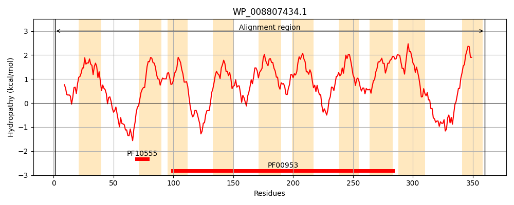
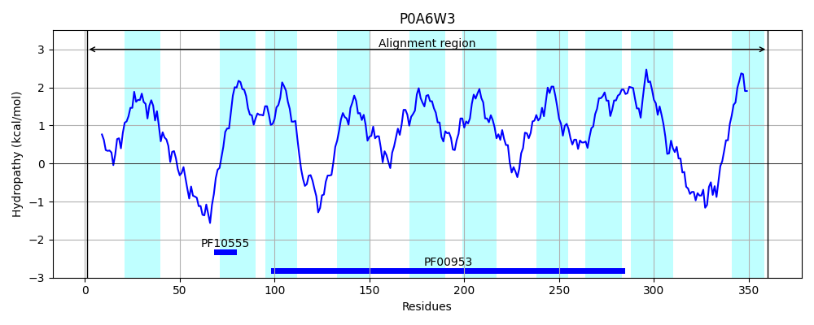
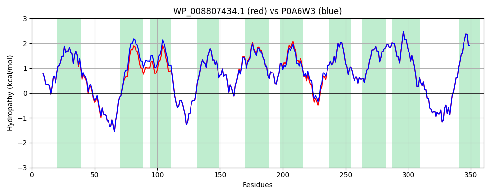

Hit Accession: P0A6W3
Hit TCID: 9.B.146.1.6
Hit Description: gnl|BL_ORD_ID|8604 gnl|TC-DB|P0A6W3|9.B.146.1.6 Phospho-N-acetylmuramoyl-pentapeptide-transferase OS=Escherichia coli (strain K12) GN=mraY PE=1 SV=1
Mach Len: 360
e:0.000000
Query TMS Count : 10
Hit TMS Count: 10
TMS-Overlap Score: 9.700000
Predicted Substrates:None
BLAST Alignment:
Score: 1827 , Bit scores: 708 bits, E-value: 0.0e+00, Alignment length: 360, Percentage identity: 97
Query: 1 MLVWLAEHLVKYYSGFNVFSYLTFRAIVSLLTALFISLWMGPRMIARLQKLSFGQVVRNDGPESHFSKRGTPTMGGIMILTAITVSVLLWAYPSNPYVWCVLTVLIGYGIIGFVDDYRKVVRKDTKGLIARWKYFWMSVIALGVAFALYLAGKDTPATELVVPFFKDVMPQLGLLYILLAYFVIVGTGNAVNLTDGLDGLAIMPTVFVAAGFALVAWATGNMNFANYLHIPYLRHAGELVIVCTAIVGAGLGFLWFNTYPAQVFMGDVGSLALGGALGIIAVLLRQEFLLVIMGGVFVVETLSVILQVGSFKLRGQRIFRMAPIHHHYELKGWPEPRVIVRFWIISLMLVLIGLATLKVR 360
MLVWLAEHLVKYYSGFNVFSYLTFRAIVSLLTALFISLWMGPRMIA LQKLSFGQVVRNDGPESHFSKRGTPTMGGIMILTAI +SVLLWAYPSNPYVWCVL VL+GYG+IGFVDDYRKVVRKDTKGLIARWKYFWMSVIALGVAFALYLAGKDTPAT+LVVPFFKDVMPQLGL YILLAYFVIVGTGNAVNLTDGLDGLAIMPTVFVA GFALVAWATGNMNFA+YLHIPYLRHAGELVIVCTAIVGAGLGFLWFNTYPAQVFMGDVGSLALGGALGIIAVLLRQEFLLVIMGGVFVVETLSVILQVGSFKLRGQRIFRMAPIHHHYELKGWPEPRVIVRFWIISLMLVLIGLATLKVR
Sbjct: 1 MLVWLAEHLVKYYSGFNVFSYLTFRAIVSLLTALFISLWMGPRMIAHLQKLSFGQVVRNDGPESHFSKRGTPTMGGIMILTAIVISVLLWAYPSNPYVWCVLVVLVGYGVIGFVDDYRKVVRKDTKGLIARWKYFWMSVIALGVAFALYLAGKDTPATQLVVPFFKDVMPQLGLFYILLAYFVIVGTGNAVNLTDGLDGLAIMPTVFVAGGFALVAWATGNMNFASYLHIPYLRHAGELVIVCTAIVGAGLGFLWFNTYPAQVFMGDVGSLALGGALGIIAVLLRQEFLLVIMGGVFVVETLSVILQVGSFKLRGQRIFRMAPIHHHYELKGWPEPRVIVRFWIISLMLVLIGLATLKVR 360 | Protein Hydropathy Plots: |
|---|
|  |  |
Pairwise Alignment-Hydropathy Plot:
|
|---|
|  |